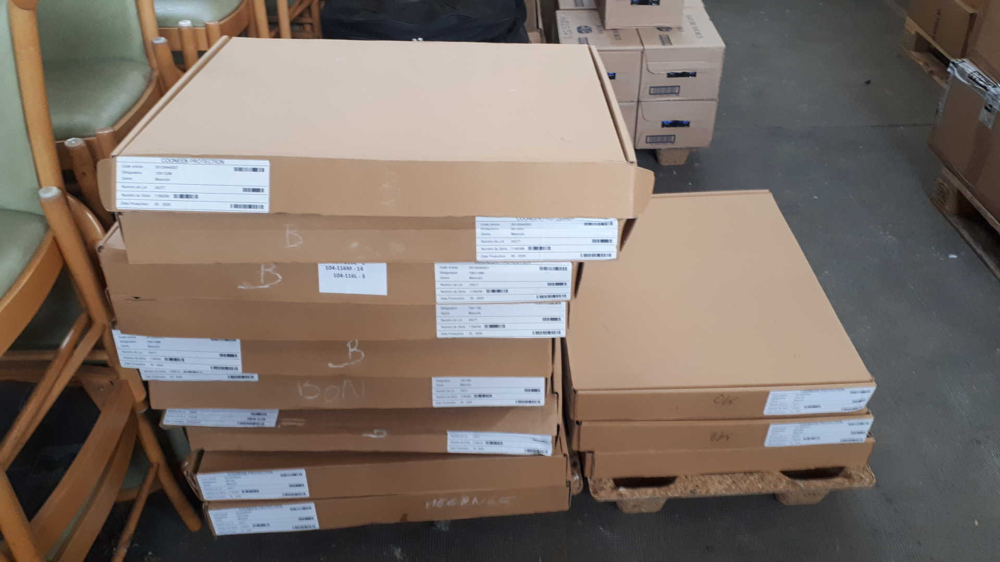

Service Technique

Missions :
Leurs missions principales consiste à soutenir "L'homme": - Monte et assure le suivi des différents dossiers concernant les accidents en service, qu'ils soient matériels ou corporels, - Effectue les commandes puis attribue le matériel sensible et non sensible (Armes, munitions, gillets pare- balles, éthylotests...), - Gestion des moyens nautiques, - Préparation logistique des cérémonie. - L'infrastructure : - Suivi des dossiers concernant l'infrastructure des locaux techniques des unités de la façade Méditerranéenne, - Gestion de la création ou dissolution d'unités, - Suivi des dossiers concernant l'entretien des locaux des Gendarmes adjoints volontaires, - Suivi des véhicules.
Moyens :
- Mobilité : Véhicule : 1 Véhicule de type RENAULT trafic blanc. - Divers : - Informatique (ordinateurs, logiciels...).
Effectifs :
- 3 personnels : 3 Sous-officiers dont 1 CSTAGN